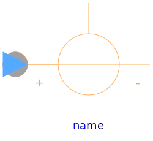
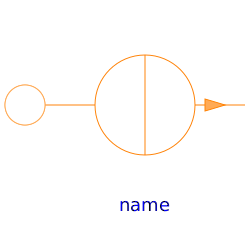
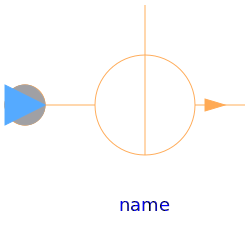

Sources to supply magnetic networks
| Name | Description |
|---|---|
|
|
Source with constant magnetic potential difference |
|  SignalMagneticPotentialDifference | Source of magnetic potential difference with signal input |
|  ConstantFlux | Source of constant magnetic flux |
|  SignalFlux | Source of time varying magnetic flux |